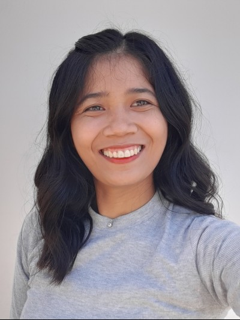

Wenndey Mae Ubatay | WDD 130
Hello! My name is Wenndey Mae Ubatay, and I am from Cagayan de Oro, Philippines. I enjoy traveling a lot. I recently went to Taiwan, and I really enjoyed exploring the sights, trying delicious foods, and learning about different cultures. I am currently studying Web Development, and I’m excited to learn how to create websites and bring ideas to life online. I enjoy discovering new technologies and improving my coding skills. I hope to combine my love for creativity and problem-solving to build engaging and user-friendly websites in the future.